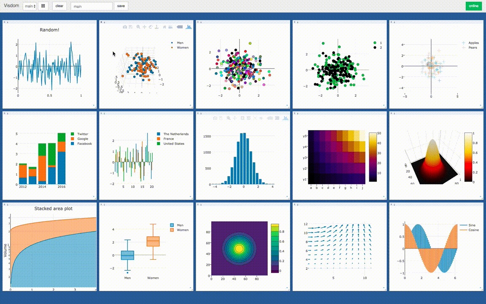
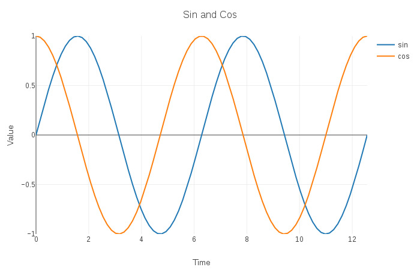
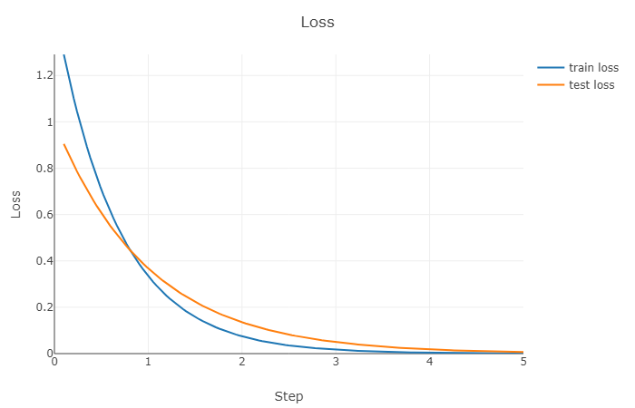

Visdom is a python package for creating and organizing visualizations of live, rich data, supporting PyTorch and Numpy, developed by Facebook research team.
Visdom supports many kinds of plots, including scatter, line, heat map, histogram, contour and so on.
Visdom runs in Browser/Server mode. That means you can run the server process on your remote machine and inspect the data plot on your local PC.

The visualization of Visdom is powered by Plotly. You can visualize you data in Plotly style. Also, visdom supports matplotlib figures.
Concepts
Environment
The whole visualization space consists of environments. By default, every user has an environment called main. Environments can be managed in the web browser or programmatically. An environment can have many windows.
Window
Every data element, such as plot, image and text, are in a windows, which you can drag, drop, resize, and destroy. The window lives in environments. In python code, a window is identified by a string.
Trace
In a window, data can be divided into many traces. In a scatter plot, the data points in a trace may have the same label. In a line plot, the points on the same line forms a trace. In python code, you can give names to traces and then you can append data points to it.
Setup Server
Install python server and client from pip.
1 | pip install visdom |
Start the server (probably in a tmux) from the command line.
1 | visdom |
There are some options can be provided to the server. By default, the server will listen to port 8097. You can change the port using -port <port_num> option. Then, you can access your visdom by going to http://localhost:<port_num> in your browser.
Code Client
Instance a client
You can instance a visdom client object in python and create plot to it.
1 | import visdom |
The default port is 8097. If you use another port, you should tell to visdom.
Draw a line
The code below can draw a line plot.
1 | x = [1, 2, 3, 4, 5] |
Visdom is procedure-oriented, function vis.line will return the handle of the window, but it’s only a string. When append data points to the window again, you should pass the handle win to the function.
Append data
The code can append a segment to the plot.
1 | vis.line(X=[6], Y=[7], win=win, update='append') |
Multi traces
You can draw multi line (trace) in one plot. Each trace has its own name. The example shows a sin and a cos function line in one plot.
1 | import numpy as np |
Style options
Plot style can be control by a opts dict. As far as I concerned, a formal plot would have these parts, 1) text part: title, xlabel, ylabel, 2) size part: height, width, 3) axis part: xtickmin, xtickmax, ytickmin, ytickmax, 4) legend part: showlegend.
1 | win = vis.line(X=[0], Y=[0], name='sin') |

Visualize loss curve in ML
The most common scenario for me to use visdom is to visualize the loss curve in machine learning training process so I wrote a encapsulating class to convert visdom to object-oriented style for loss function visualiztion.
Class definition.
1 | import visdom |
Instance.
1 | plot = Plot('Loss', 'Step', 'Loss', ['train loss', 'test loss']) |
Using.
1 | import numpy as np |
